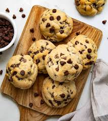
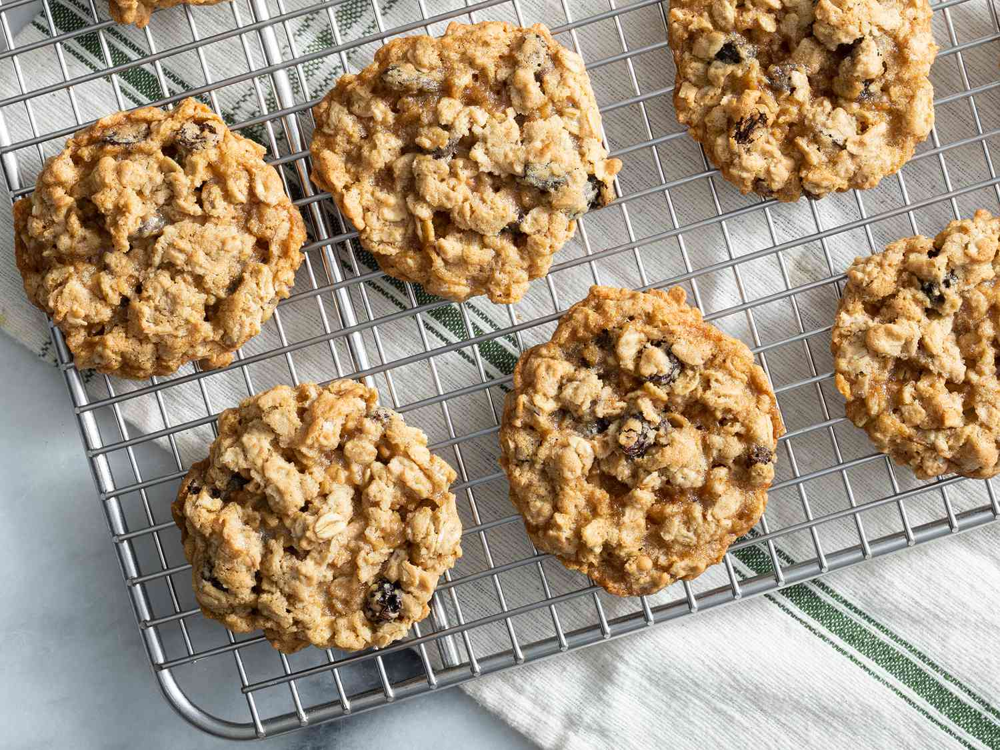
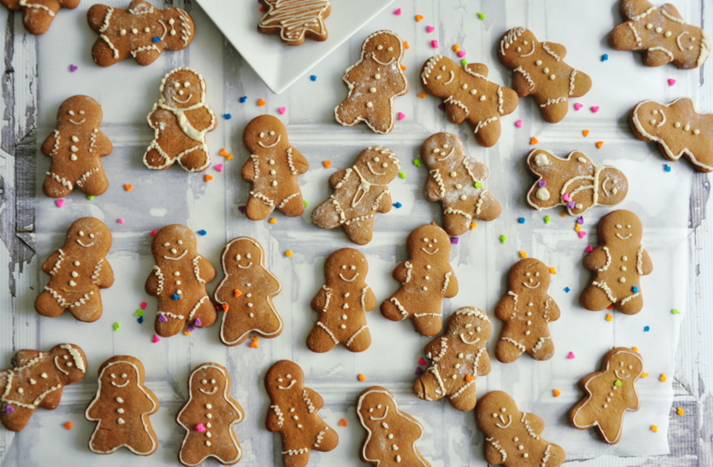

Thick, Soft & Chewy Chocolate Chip Cookies
Delicious! Ten out of ten. I definitely recommend. If you are a beginner at baking you should try this recipe. My whole family loved these. They are the best chewy, soft chocolate chip cookies I have ever had.
Oatmeal Raisin Cookies
Wow! These are the BEST oatmeal raisin cookies ever!! Soft, moist, chewy and the texture is perfect! These cookies are as good as any bakery sells.
The Most Wonderful Gingerbread Cookies
I made this recipe this year and it is the best. I have tried others but they don't even come close. I put a cream cheese frosting on top. My family loved them.